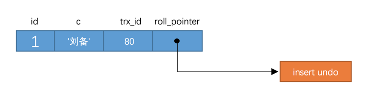
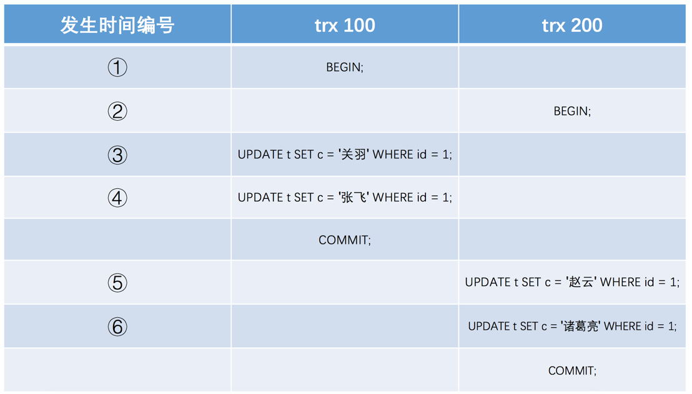
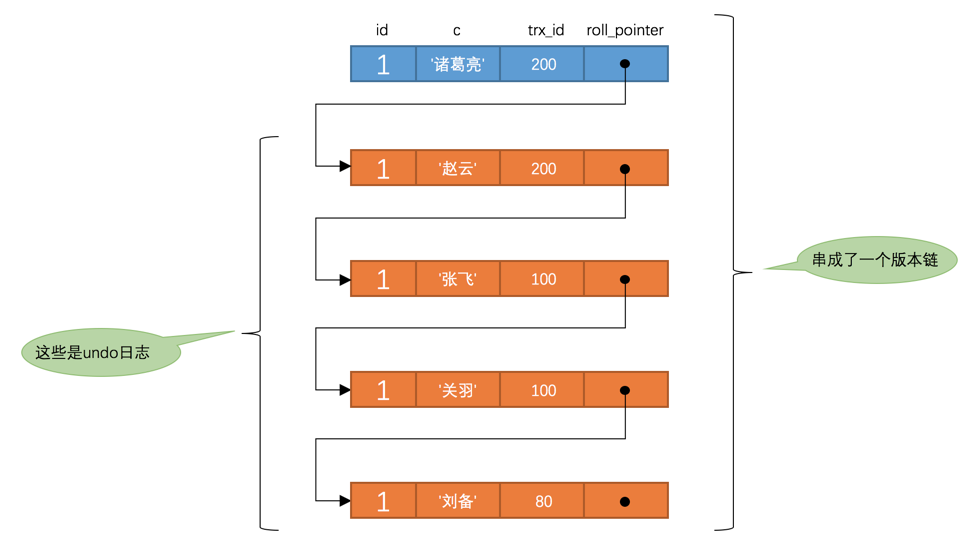
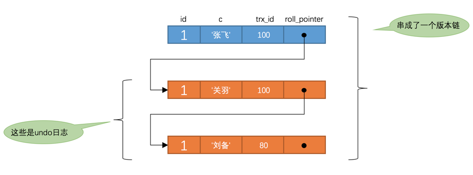
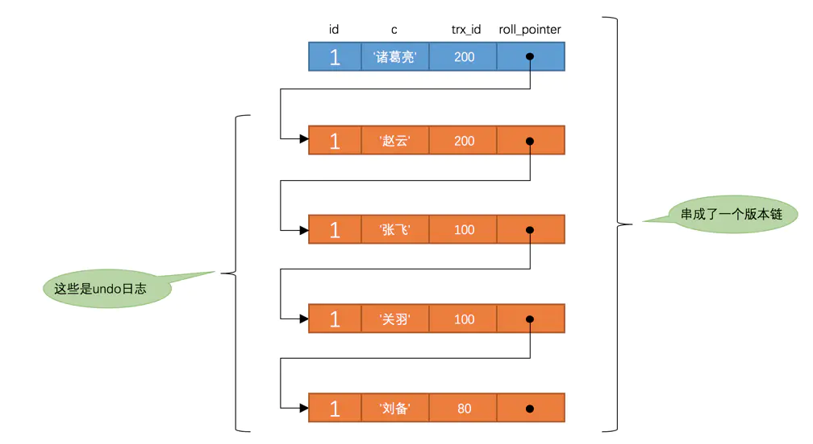

<!DOCTYPE html>


<html lang="en" >


<head>
  <meta charset="utf-8" />
    
  <meta name="viewport" content="width=device-width, initial-scale=1, maximum-scale=1" />
  <title>
    浅谈MVCC |  孙云龙的技术博客
  </title>
  <meta name="generator" content="hexo-theme-yilia-plus">
  
  <link rel="shortcut icon" href="/favicon.ico" />
  
  <link rel="stylesheet" href="/dist/main.css">
  <link rel="stylesheet" href="/css/custom.css">
  
  <script src="https://cdn.jsdelivr.net/npm/pace-js@1.0.2/pace.min.js"></script>
  
  

  

<link rel="alternate" href="/atom.xml" title="孙云龙的技术博客" type="application/atom+xml">
</head>

</html>

<body>
  <div id="app">
    <main class="content on">
      <section class="outer">
  <article id="blog-浅谈MVCC" class="article article-type-blog" itemscope
  itemprop="blogPost" data-scroll-reveal>

  <div class="article-inner">
    
    <header class="article-header">
       
<h1 class="article-title sea-center" style="border-left:0" itemprop="name">
  浅谈MVCC
</h1>
 

    </header>
    

    
    <div class="article-meta">
      <a href="/2020/03/23/浅谈MVCC/" class="article-date">
  <time datetime="2020-03-23T15:42:30.000Z" itemprop="datePublished">2020-03-23</time>
</a>
      
  <div class="article-category">
    <a class="article-category-link" href="/categories/数据库/">数据库</a>
  </div>

      
      
<div class="word_count">
    <span class="post-time">
        <span class="post-meta-item-icon">
            <i class="ri-quill-pen-line"></i>
            <span class="post-meta-item-text"> Word count:</span>
            <span class="post-count">3.4k</span>
        </span>
    </span>

    <span class="post-time">
        &nbsp; | &nbsp;
        <span class="post-meta-item-icon">
            <i class="ri-book-open-line"></i>
            <span class="post-meta-item-text"> Reading time≈</span>
            <span class="post-count">12 min</span>
        </span>
    </span>
</div>

      
    </div>
    

    
    
    <div class="tocbot"></div>


    

    
    <div class="article-entry" itemprop="articleBody">
      
      

      
      <h2 id="事前准备"><a href="#事前准备" class="headerlink" title="事前准备"></a>事前准备</h2><h3 id="版本链"><a href="#版本链" class="headerlink" title="版本链"></a>版本链</h3><p>对于使用InnoDB存储引擎的表来说，它的聚簇索引记录中都包含两个必要的隐藏列（row_id并不是必要的，我们创建的表中有主键或者非NULL唯一键时都不会包含row_id列）：</p>
<ol>
<li>trx_id：每次对某条聚簇索引记录进行改动时，都会把对应的事务id赋值给trx_id隐藏列。</li>
<li>roll_pointer：每次对某条聚簇索引记录进行改动时，都会把旧的版本写入到undo日志中，然后这个隐藏列就相当于一个指针，可以通过它来找到该记录修改前的信息。</li>
</ol>
<h4 id="比方说我们的表t现在只包含一条记录："><a href="#比方说我们的表t现在只包含一条记录：" class="headerlink" title="比方说我们的表t现在只包含一条记录："></a>比方说我们的表t现在只包含一条记录：</h4><figure class="highlight plain"><table><tr><td class="gutter"><pre><span class="line">1</span><br><span class="line">2</span><br><span class="line">3</span><br><span class="line">4</span><br><span class="line">5</span><br><span class="line">6</span><br><span class="line">7</span><br></pre></td><td class="code"><pre><span class="line">mysql&gt; SELECT * FROM t;</span><br><span class="line">+----+--------+</span><br><span class="line">| id | c      |</span><br><span class="line">+----+--------+</span><br><span class="line">|  1 | 刘备   |</span><br><span class="line">+----+--------+</span><br><span class="line">1 row in set (0.01 sec)</span><br></pre></td></tr></table></figure>

<p>复制代码假设插入该记录的事务id为80，那么此刻该条记录的示意图如下所示：</p>
<p><br>假设之后两个id分别为100、200的事务对这条记录进行UPDATE操作，操作流程如下：</p>
<p>  </p>
<ol>
<li>小贴士： 能不能在两个事务中交叉更新同一条记录呢？哈哈，这是不可以滴，第一个事务更新了某条记录后，就会给这条记录加锁，另一个事务再次更新时就需要等待第一个事务提交了，把锁释放之后才可以继续更新。本篇文章不是讨论锁的，有关锁的更多细节我们之后再说。</li>
</ol>
<p>每次对记录进行改动，都会记录一条undo日志，每条undo日志也都有一个roll_pointer属性（INSERT操作对应的undo日志没有该属性，因为该记录并没有更早的版本），可以将这些undo日志都连起来，串成一个链表，所以现在的情况就像下图一样：</p>
<p>  </p>
<p>对该记录每次更新后，都会将旧值放到一条undo日志中，就算是该记录的一个旧版本，随着更新次数的增多，所有的版本都会被roll_pointer属性连接成一个链表，我们把这个链表称之为版本链，版本链的头节点就是当前记录最新的值。另外，每个版本中还包含生成该版本时对应的事务id，这个信息很重要，我们稍后就会用到。</p>
<h3 id="ReadView"><a href="#ReadView" class="headerlink" title="ReadView"></a>ReadView</h3><p>对于使用READ UNCOMMITTED隔离级别的事务来说，直接读取记录的最新版本就好了，对于使用SERIALIZABLE隔离级别的事务来说，使用加锁的方式来访问记录。对于使用READ COMMITTED和REPEATABLE READ隔离级别的事务来说，就需要用到我们上边所说的版本链了，核心问题就是：需要判断一下版本链中的哪个版本是当前事务可见的。所以设计InnoDB的大叔提出了一个ReadView的概念，这个ReadView中主要包含当前系统中还有哪些活跃的读写事务，把它们的事务id放到一个列表中，我们把这个列表命名为为m_ids。这样在访问某条记录时，只需要按照下边的步骤判断记录的某个版本是否可见：</p>
<ol>
<li>如果被访问版本的trx_id属性值小于m_ids列表中最小的事务id，表明生成该版本的事务在生成ReadView前已经提交，所以该版本可以被当前事务访问。</li>
<li>如果被访问版本的trx_id属性值大于m_ids列表中最大的事务id，表明生成该版本的事务在生成ReadView后才生成，所以该版本不可以被当前事务访问。</li>
<li>如果被访问版本的trx_id属性值在m_ids列表中最大的事务id和最小事务id之间，那就需要判断一下trx_id属性值是不是在m_ids列表中，如果在，说明创建ReadView时生成该版本的事务还是活跃的，该版本不可以被访问；如果不在，说明创建ReadView时生成该版本的事务已经被提交，该版本可以被访问。</li>
</ol>
<p>如果某个版本的数据对当前事务不可见的话，那就顺着版本链找到下一个版本的数据，继续按照上边的步骤判断可见性，依此类推，直到版本链中的最后一个版本，如果最后一个版本也不可见的话，那么就意味着该条记录对该事务不可见，查询结果就不包含该记录。</p>
<p>在MySQL中，READ COMMITTED和REPEATABLE READ隔离级别的的一个非常大的区别就是它们生成ReadView的时机不同，我们来看一下。</p>
<h3 id="READ-COMMITTED-—-每次读取数据前都生成一个ReadView"><a href="#READ-COMMITTED-—-每次读取数据前都生成一个ReadView" class="headerlink" title="READ COMMITTED — 每次读取数据前都生成一个ReadView"></a>READ COMMITTED — 每次读取数据前都生成一个ReadView</h3><p>比方说现在系统里有两个id分别为100、200的事务在执行：</p>
<figure class="highlight plain"><table><tr><td class="gutter"><pre><span class="line">1</span><br><span class="line">2</span><br><span class="line">3</span><br><span class="line">4</span><br><span class="line">5</span><br><span class="line">6</span><br></pre></td><td class="code"><pre><span class="line"># Transaction 100</span><br><span class="line">BEGIN;</span><br><span class="line"></span><br><span class="line">UPDATE t SET c = &apos;关羽&apos; WHERE id = 1;</span><br><span class="line"></span><br><span class="line">UPDATE t SET c = &apos;张飞&apos; WHERE id = 1;</span><br></pre></td></tr></table></figure>

<figure class="highlight plain"><table><tr><td class="gutter"><pre><span class="line">1</span><br><span class="line">2</span><br><span class="line">3</span><br><span class="line">4</span><br><span class="line">5</span><br></pre></td><td class="code"><pre><span class="line"># Transaction 200</span><br><span class="line">BEGIN;</span><br><span class="line"></span><br><span class="line"># 更新了一些别的表的记录</span><br><span class="line">...</span><br></pre></td></tr></table></figure>

<ol>
<li>小贴士： 事务执行过程中，只有在第一次真正修改记录时（比如使用INSERT、DELETE、UPDATE语句），才会被分配一个单独的事务id，这个事务id是递增的。</li>
</ol>
<p>此刻，表t中id为1的记录得到的版本链表如下所示：</p>
<p></p>
<p>假设现在有一个使用READ COMMITTED隔离级别的事务开始执行：</p>
<figure class="highlight plain"><table><tr><td class="gutter"><pre><span class="line">1</span><br><span class="line">2</span><br><span class="line">3</span><br><span class="line">4</span><br><span class="line">5</span><br></pre></td><td class="code"><pre><span class="line"># 使用READ COMMITTED隔离级别的事务</span><br><span class="line">BEGIN;</span><br><span class="line"></span><br><span class="line"># SELECT1：Transaction 100、200未提交</span><br><span class="line">SELECT * FROM t WHERE id = 1; # 得到的列c的值为&apos;刘备&apos;</span><br></pre></td></tr></table></figure>

<p>这个SELECT1的执行过程如下：</p>
<p>在执行SELECT语句时会先生成一个ReadView，ReadView的m_ids列表的内容就是[100, 200]。</p>
<p>然后从版本链中挑选可见的记录，从图中可以看出，最新版本的列c的内容是’张飞’，该版本的trx_id值为100，在m_ids列表内，所以不符合可见性要求，根据roll_pointer跳到下一个版本。</p>
<p>下一个版本的列c的内容是’关羽’，该版本的trx_id值也为100，也在m_ids列表内，所以也不符合要求，继续跳到下一个版本。</p>
<p>下一个版本的列c的内容是’刘备’，该版本的trx_id值为80，小于m_ids列表中最小的事务id100，所以这个版本是符合要求的，最后返回给用户的版本就是这条列c为’刘备’的记录。</p>
<p>之后，我们把事务id为100的事务提交一下，就像这样：</p>
<figure class="highlight plain"><table><tr><td class="gutter"><pre><span class="line">1</span><br><span class="line">2</span><br><span class="line">3</span><br><span class="line">4</span><br><span class="line">5</span><br><span class="line">6</span><br><span class="line">7</span><br><span class="line">8</span><br><span class="line">9</span><br></pre></td><td class="code"><pre><span class="line"></span><br><span class="line"># Transaction 100</span><br><span class="line">BEGIN;</span><br><span class="line"></span><br><span class="line">UPDATE t SET c = &apos;关羽&apos; WHERE id = 1;</span><br><span class="line"></span><br><span class="line">UPDATE t SET c = &apos;张飞&apos; WHERE id = 1;</span><br><span class="line"></span><br><span class="line">COMMIT;</span><br></pre></td></tr></table></figure>

<p>然后再到事务id为200的事务中更新一下表t中id为1的记录：</p>
<figure class="highlight plain"><table><tr><td class="gutter"><pre><span class="line">1</span><br><span class="line">2</span><br><span class="line">3</span><br><span class="line">4</span><br><span class="line">5</span><br><span class="line">6</span><br><span class="line">7</span><br><span class="line">8</span><br><span class="line">9</span><br></pre></td><td class="code"><pre><span class="line"># Transaction 200</span><br><span class="line">BEGIN;</span><br><span class="line"></span><br><span class="line"># 更新了一些别的表的记录</span><br><span class="line">...</span><br><span class="line"></span><br><span class="line">UPDATE t SET c = &apos;赵云&apos; WHERE id = 1;</span><br><span class="line"></span><br><span class="line">UPDATE t SET c = &apos;诸葛亮&apos; WHERE id = 1;</span><br></pre></td></tr></table></figure>

<p>此刻，表t中id为1的记录的版本链就长这样：</p>
<p></p>
<p>然后再到刚才使用READ COMMITTED隔离级别的事务中继续查找这个id为1的记录，如下：</p>
<figure class="highlight plain"><table><tr><td class="gutter"><pre><span class="line">1</span><br><span class="line">2</span><br><span class="line">3</span><br><span class="line">4</span><br><span class="line">5</span><br><span class="line">6</span><br><span class="line">7</span><br><span class="line">8</span><br></pre></td><td class="code"><pre><span class="line"># 使用READ COMMITTED隔离级别的事务</span><br><span class="line">BEGIN;</span><br><span class="line"></span><br><span class="line"># SELECT1：Transaction 100、200均未提交</span><br><span class="line">SELECT * FROM t WHERE id = 1; # 得到的列c的值为&apos;刘备&apos;</span><br><span class="line"></span><br><span class="line"># SELECT2：Transaction 100提交，Transaction 200未提交</span><br><span class="line">SELECT * FROM t WHERE id = 1; # 得到的列c的值为&apos;张飞&apos;</span><br></pre></td></tr></table></figure>

<p>这个SELECT2的执行过程如下：</p>
<p>在执行SELECT语句时会先生成一个ReadView，ReadView的m_ids列表的内容就是[200]（事务id为100的那个事务已经提交了，所以生成快照时就没有它了）。</p>
<p>然后从版本链中挑选可见的记录，从图中可以看出，最新版本的列c的内容是’诸葛亮’，该版本的trx_id值为200，在m_ids列表内，所以不符合可见性要求，根据roll_pointer跳到下一个版本。</p>
<p>下一个版本的列c的内容是’赵云’，该版本的trx_id值为200，也在m_ids列表内，所以也不符合要求，继续跳到下一个版本。</p>
<p>下一个版本的列c的内容是’张飞’，该版本的trx_id值为100，比m_ids列表中最小的事务id200还要小，所以这个版本是符合要求的，最后返回给用户的版本就是这条列c为’张飞’的记录。</p>
<p>以此类推，如果之后事务id为200的记录也提交了，再此在使用READ COMMITTED隔离级别的事务中查询表t中id值为1的记录时，得到的结果就是’诸葛亮’了，具体流程我们就不分析了。总结一下就是：使用READ COMMITTED隔离级别的事务在每次查询开始时都会生成一个独立的ReadView。</p>
<h3 id="REPEATABLE-READ-—在第一次读取数据时生成一个ReadView"><a href="#REPEATABLE-READ-—在第一次读取数据时生成一个ReadView" class="headerlink" title="REPEATABLE READ —在第一次读取数据时生成一个ReadView"></a>REPEATABLE READ —在第一次读取数据时生成一个ReadView</h3><p>对于使用REPEATABLE READ隔离级别的事务来说，只会在第一次执行查询语句时生成一个ReadView，之后的查询就不会重复生成了。我们还是用例子看一下是什么效果。</p>
<p>比方说现在系统里有两个id分别为100、200的事务在执行：</p>
<figure class="highlight plain"><table><tr><td class="gutter"><pre><span class="line">1</span><br><span class="line">2</span><br><span class="line">3</span><br><span class="line">4</span><br><span class="line">5</span><br><span class="line">6</span><br></pre></td><td class="code"><pre><span class="line"># Transaction 100</span><br><span class="line">BEGIN;</span><br><span class="line"></span><br><span class="line">UPDATE t SET c = &apos;关羽&apos; WHERE id = 1;</span><br><span class="line"></span><br><span class="line">UPDATE t SET c = &apos;张飞&apos; WHERE id = 1;</span><br></pre></td></tr></table></figure>

<figure class="highlight plain"><table><tr><td class="gutter"><pre><span class="line">1</span><br><span class="line">2</span><br><span class="line">3</span><br><span class="line">4</span><br><span class="line">5</span><br></pre></td><td class="code"><pre><span class="line"># Transaction 200</span><br><span class="line">BEGIN;</span><br><span class="line"></span><br><span class="line"># 更新了一些别的表的记录</span><br><span class="line">...</span><br></pre></td></tr></table></figure>

<p>此刻，表t中id为1的记录得到的版本链表如下所示：</p>
<p></p>
<p>假设现在有一个使用REPEATABLE READ隔离级别的事务开始执行：</p>
<figure class="highlight plain"><table><tr><td class="gutter"><pre><span class="line">1</span><br><span class="line">2</span><br><span class="line">3</span><br><span class="line">4</span><br><span class="line">5</span><br></pre></td><td class="code"><pre><span class="line"># 使用REPEATABLE READ隔离级别的事务</span><br><span class="line">BEGIN;</span><br><span class="line"></span><br><span class="line"># SELECT1：Transaction 100、200未提交</span><br><span class="line">SELECT * FROM t WHERE id = 1; # 得到的列c的值为&apos;刘备&apos;</span><br></pre></td></tr></table></figure>

<p>这个SELECT1的执行过程如下：</p>
<p>在执行SELECT语句时会先生成一个ReadView，ReadView的m_ids列表的内容就是[100, 200]。</p>
<p>然后从版本链中挑选可见的记录，从图中可以看出，最新版本的列c的内容是’张飞’，该版本的trx_id值为100，在m_ids列表内，所以不符合可见性要求，根据roll_pointer跳到下一个版本。</p>
<p>下一个版本的列c的内容是’关羽’，该版本的trx_id值也为100，也在m_ids列表内，所以也不符合要求，继续跳到下一个版本。</p>
<p>下一个版本的列c的内容是’刘备’，该版本的trx_id值为80，小于m_ids列表中最小的事务id100，所以这个版本是符合要求的，最后返回给用户的版本就是这条列c为’刘备’的记录。</p>
<p>之后，我们把事务id为100的事务提交一下，就像这样：</p>
<figure class="highlight plain"><table><tr><td class="gutter"><pre><span class="line">1</span><br><span class="line">2</span><br><span class="line">3</span><br><span class="line">4</span><br><span class="line">5</span><br><span class="line">6</span><br><span class="line">7</span><br><span class="line">8</span><br></pre></td><td class="code"><pre><span class="line"># Transaction 100</span><br><span class="line">BEGIN;</span><br><span class="line"></span><br><span class="line">UPDATE t SET c = &apos;关羽&apos; WHERE id = 1;</span><br><span class="line"></span><br><span class="line">UPDATE t SET c = &apos;张飞&apos; WHERE id = 1;</span><br><span class="line"></span><br><span class="line">COMMIT;</span><br></pre></td></tr></table></figure>

<p>然后再到事务id为200的事务中更新一下表t中id为1的记录：</p>
<figure class="highlight plain"><table><tr><td class="gutter"><pre><span class="line">1</span><br><span class="line">2</span><br><span class="line">3</span><br><span class="line">4</span><br><span class="line">5</span><br><span class="line">6</span><br><span class="line">7</span><br><span class="line">8</span><br><span class="line">9</span><br></pre></td><td class="code"><pre><span class="line"># Transaction 200</span><br><span class="line">BEGIN;</span><br><span class="line"></span><br><span class="line"># 更新了一些别的表的记录</span><br><span class="line">...</span><br><span class="line"></span><br><span class="line">UPDATE t SET c = &apos;赵云&apos; WHERE id = 1;</span><br><span class="line"></span><br><span class="line">UPDATE t SET c = &apos;诸葛亮&apos; WHERE id = 1;</span><br></pre></td></tr></table></figure>

<p>此刻，表t中id为1的记录的版本链就长这样：</p>
<p></p>
<p>然后再到刚才使用REPEATABLE READ隔离级别的事务中继续查找这个id为1的记录，如下：</p>
<figure class="highlight plain"><table><tr><td class="gutter"><pre><span class="line">1</span><br><span class="line">2</span><br><span class="line">3</span><br><span class="line">4</span><br><span class="line">5</span><br><span class="line">6</span><br><span class="line">7</span><br><span class="line">8</span><br></pre></td><td class="code"><pre><span class="line"># 使用REPEATABLE READ隔离级别的事务</span><br><span class="line">BEGIN;</span><br><span class="line"></span><br><span class="line"># SELECT1：Transaction 100、200均未提交</span><br><span class="line">SELECT * FROM t WHERE id = 1; # 得到的列c的值为&apos;刘备&apos;</span><br><span class="line"></span><br><span class="line"># SELECT2：Transaction 100提交，Transaction 200未提交</span><br><span class="line">SELECT * FROM t WHERE id = 1; # 得到的列c的值仍为&apos;刘备&apos;</span><br></pre></td></tr></table></figure>

<p>这个SELECT2的执行过程如下：</p>
<p>因为之前已经生成过ReadView了，所以此时直接复用之前的ReadView，之前的ReadView中的m_ids列表就是[100, 200]。</p>
<p>然后从版本链中挑选可见的记录，从图中可以看出，最新版本的列c的内容是’诸葛亮’，该版本的trx_id值为200，在m_ids列表内，所以不符合可见性要求，根据roll_pointer跳到下一个版本。</p>
<p>下一个版本的列c的内容是’赵云’，该版本的trx_id值为200，也在m_ids列表内，所以也不符合要求，继续跳到下一个版本。</p>
<p>下一个版本的列c的内容是’张飞’，该版本的trx_id值为100，而m_ids列表中是包含值为100的事务id的，所以该版本也不符合要求，同理下一个列c的内容是’关羽’的版本也不符合要求。继续跳到下一个版本。</p>
<p>下一个版本的列c的内容是’刘备’，该版本的trx_id值为80，80小于m_ids列表中最小的事务id100，所以这个版本是符合要求的，最后返回给用户的版本就是这条列c为’刘备’的记录。</p>
<p>也就是说两次SELECT查询得到的结果是重复的，记录的列c值都是’刘备’，这就是可重复读的含义。如果我们之后再把事务id为200的记录提交了，之后再到刚才使用REPEATABLE READ隔离级别的事务中继续查找这个id为1的记录，得到的结果还是’刘备’，具体执行过程大家可以自己分析一下。</p>
<h3 id="MVCC总结"><a href="#MVCC总结" class="headerlink" title="MVCC总结"></a>MVCC总结</h3><p>从上边的描述中我们可以看出来，所谓的MVCC（Multi-Version Concurrency Control ，多版本并发控制）指的就是在使用READ COMMITTD、REPEATABLE READ这两种隔离级别的事务在执行普通的SEELCT操作时访问记录的版本链的过程，这样子可以使不同事务的读-写、写-读操作并发执行，从而提升系统性能。READ COMMITTD、REPEATABLE READ这两个隔离级别的一个很大不同就是生成ReadView的时机不同，READ COMMITTD在每一次进行普通SELECT操作前都会生成一个ReadView，而REPEATABLE READ只在第一次进行普通SELECT操作前生成一个ReadView，之后的查询操作都重复这个ReadView就好了。</p>

      
      <!-- reward -->
      
    </div>
    
    
      <!-- copyright -->
      
        <div class="declare">
          <ul class="post-copyright">
            <li>
              <i class="ri-copyright-line"></i>
              <strong>Copyright： </strong>
              Copyright is owned by the author. For commercial reprints, please contact the author for authorization. For non-commercial reprints, please indicate the source.
            </li>
          </ul>
        </div>
        
    <footer class="article-footer">
      
          
<div class="share-btn">
      <span class="share-sns share-outer">
        <i class="ri-share-forward-line"></i>
        分享
      </span>
      <div class="share-wrap">
        <i class="arrow"></i>
        <div class="share-icons">
          
          <a class="weibo share-sns" href="javascript:;" data-type="weibo">
            <i class="ri-weibo-fill"></i>
          </a>
          <a class="weixin share-sns wxFab" href="javascript:;" data-type="weixin">
            <i class="ri-wechat-fill"></i>
          </a>
          <a class="qq share-sns" href="javascript:;" data-type="qq">
            <i class="ri-qq-fill"></i>
          </a>
          <a class="douban share-sns" href="javascript:;" data-type="douban">
            <i class="ri-douban-line"></i>
          </a>
          <!-- <a class="qzone share-sns" href="javascript:;" data-type="qzone">
            <i class="icon icon-qzone"></i>
          </a> -->
          
          <a class="facebook share-sns" href="javascript:;" data-type="facebook">
            <i class="ri-facebook-circle-fill"></i>
          </a>
          <a class="twitter share-sns" href="javascript:;" data-type="twitter">
            <i class="ri-twitter-fill"></i>
          </a>
          <a class="google share-sns" href="javascript:;" data-type="google">
            <i class="ri-google-fill"></i>
          </a>
        </div>
      </div>
</div>

<div class="wx-share-modal">
    <a class="modal-close" href="javascript:;"><i class="ri-close-circle-line"></i></a>
    <p>扫一扫，分享到微信</p>
    <div class="wx-qrcode">
      
    </div>
</div>

<div id="share-mask"></div>
      
      
  <ul class="article-tag-list"><li class="article-tag-list-item"><a class="article-tag-list-link" href="/tags/MVCC/">MVCC</a></li><li class="article-tag-list-item"><a class="article-tag-list-link" href="/tags/数据库/">数据库</a></li></ul>


    </footer>

  </div>

  
  
  <nav class="article-nav">
    
      <a href="/2020/03/24/go-big-or-go-home-9/" class="article-nav-link">
        <strong class="article-nav-caption">上一篇</strong>
        <div class="article-nav-title">
          
            go big or go home-9
          
        </div>
      </a>
    
    
      <a href="/2020/03/23/go-big-or-go-home-8/" class="article-nav-link">
        <strong class="article-nav-caption">下一篇</strong>
        <div class="article-nav-title">go big or go home-8</div>
      </a>
    
  </nav>


  

  
  
<!-- valine评论 -->
<div id="vcomments-box">
    <div id="vcomments">
    </div>
</div>
<script src="//cdn1.lncld.net/static/js/3.0.4/av-min.js"></script>
<script src='https://cdn.jsdelivr.net/npm/valine@1.3.10/dist/Valine.min.js'></script>
<script>
    new Valine({
        el: '#vcomments',
        app_id: '',
        app_key: '',
        path: window.location.pathname,
        notify: 'false',
        verify: 'false',
        avatar: 'mp',
        placeholder: '给我的文章加点评论吧~',
        recordIP: true
    });
    const infoEle = document.querySelector('#vcomments .info');
    if (infoEle && infoEle.childNodes && infoEle.childNodes.length > 0) {
        infoEle.childNodes.forEach(function (item) {
            item.parentNode.removeChild(item);
        });
    }
</script>
<style>
    #vcomments-box {
        padding: 5px 30px;
    }

    @media screen and (max-width: 800px) {
        #vcomments-box {
            padding: 5px 0px;
        }
    }

    #vcomments-box #vcomments {
        background-color: #fff;
    }

    .v .vlist .vcard .vh {
        padding-right: 20px;
    }

    .v .vlist .vcard {
        padding-left: 10px;
    }
</style>

  

  
  
  

</article>
</section>
      <footer class="footer">
  <div class="outer">
    <ul class="list-inline">
      <li>
        &copy;
        2015-2020
        Gavin
      </li>
      <li>
        
        Powered by
        
        
        <a href="https://hexo.io" target="_blank">Hexo</a> Theme <a href="https://github.com/Shen-Yu/hexo-theme-ayer" target="_blank">Ayer</a>
        
      </li>
    </ul>
    <ul class="list-inline">
      <li>
        
        
        <span>
  <i>PV:<span id="busuanzi_value_page_pv"></span></i>
  <i>UV:<span id="busuanzi_value_site_uv"></span></i>
</span>
        
      </li>
      
      <li>
        <!-- cnzz统计 -->
        
        <script type="text/javascript" src='https://s9.cnzz.com/z_stat.php?id=1278069914&amp;web_id=1278069914'></script>
        
      </li>
    </ul>
  </div>
</footer>
      <div class="float_btns">
        <div class="totop" id="totop">
  <i class="ri-arrow-up-line"></i>
</div>

<div class="todark" id="todark">
  <i class="ri-moon-line"></i>
</div>

      </div>
    </main>
    <aside class="sidebar on">
      <button class="navbar-toggle"></button>
<nav class="navbar">
  
  <div class="logo">
    <a href="/"></a>
  </div>
  
  <ul class="nav nav-main">
    
    <li class="nav-item">
      <a class="nav-item-link" href="/">主页</a>
    </li>
    
    <li class="nav-item">
      <a class="nav-item-link" href="/archives">归档</a>
    </li>
    
    <li class="nav-item">
      <a class="nav-item-link" href="/categories">目录</a>
    </li>
    
    <li class="nav-item">
      <a class="nav-item-link" href="/tags">标签</a>
    </li>
    
    <li class="nav-item">
      <a class="nav-item-link" href="/about">关于我</a>
    </li>
    
  </ul>
</nav>
<nav class="navbar navbar-bottom">
  <ul class="nav">
    <li class="nav-item">
      
      <a class="nav-item-link nav-item-search"  title="Search">
        <i class="ri-search-line"></i>
      </a>
      
      
      <a class="nav-item-link" target="_blank" href="/atom.xml" title="RSS Feed">
        <i class="ri-rss-line"></i>
      </a>
      
    </li>
  </ul>
</nav>
<div class="search-form-wrap">
  <div class="local-search local-search-plugin">
  <input type="search" id="local-search-input" class="local-search-input" placeholder="Search...">
  <div id="local-search-result" class="local-search-result"></div>
</div>
</div>
    </aside>
    <script>
      if (window.matchMedia("(max-width: 768px)").matches) {
        document.querySelector('.content').classList.remove('on');
        document.querySelector('.sidebar').classList.remove('on');
      }
    </script>
    <div id="mask"></div>

<!-- #reward -->
<div id="reward">
  <span class="close"><i class="ri-close-line"></i></span>
  <p class="reward-p"><i class="ri-cup-line"></i>请我喝杯咖啡吧~</p>
  <div class="reward-box">
    
    <div class="reward-item">
      
      <span class="reward-type">支付宝</span>
    </div>
    
    
    <div class="reward-item">
      
      <span class="reward-type">微信</span>
    </div>
    
  </div>
</div>
    <script src="/js/jquery-2.0.3.min.js"></script>
<script src="/js/lazyload.min.js"></script>

<script>
  try {
    var typed = new Typed("#subtitle", {
      strings: ['面朝大海，春暖花开', '愿你一生努力，一生被爱', '想要的都拥有，得不到的都释怀'],
      startDelay: 0,
      typeSpeed: 200,
      loop: true,
      backSpeed: 100,
      showCursor: true
    });
  } catch (err) {
  }

</script>


<script src="/js/tocbot.min.js"></script>
<script>
  // Tocbot_v4.7.0  http://tscanlin.github.io/tocbot/
  tocbot.init({
    tocSelector: '.tocbot',
    contentSelector: '.article-entry',
    headingSelector: 'h1, h2, h3, h4, h5, h6',
    hasInnerContainers: true,
    scrollSmooth: true,
    scrollContainer: 'main',
    positionFixedSelector: '.tocbot',
    positionFixedClass: 'is-position-fixed',
    fixedSidebarOffset: 'auto'
  });
</script>


<script src="https://cdn.jsdelivr.net/npm/jquery-modal@0.9.2/jquery.modal.min.js"></script>
<link rel="stylesheet" href="https://cdn.jsdelivr.net/npm/jquery-modal@0.9.2/jquery.modal.min.css">
<script src="https://cdn.jsdelivr.net/npm/justifiedGallery@3.7.0/dist/js/jquery.justifiedGallery.min.js"></script>
<script src="/dist/main.js"></script>


<!-- Root element of PhotoSwipe. Must have class pswp. -->
<div class="pswp" tabindex="-1" role="dialog" aria-hidden="true">

    <!-- Background of PhotoSwipe. 
         It's a separate element as animating opacity is faster than rgba(). -->
    <div class="pswp__bg"></div>

    <!-- Slides wrapper with overflow:hidden. -->
    <div class="pswp__scroll-wrap">

        <!-- Container that holds slides. 
            PhotoSwipe keeps only 3 of them in the DOM to save memory.
            Don't modify these 3 pswp__item elements, data is added later on. -->
        <div class="pswp__container">
            <div class="pswp__item"></div>
            <div class="pswp__item"></div>
            <div class="pswp__item"></div>
        </div>

        <!-- Default (PhotoSwipeUI_Default) interface on top of sliding area. Can be changed. -->
        <div class="pswp__ui pswp__ui--hidden">

            <div class="pswp__top-bar">

                <!--  Controls are self-explanatory. Order can be changed. -->

                <div class="pswp__counter"></div>

                <button class="pswp__button pswp__button--close" title="Close (Esc)"></button>

                <button class="pswp__button pswp__button--share" style="display:none" title="Share"></button>

                <button class="pswp__button pswp__button--fs" title="Toggle fullscreen"></button>

                <button class="pswp__button pswp__button--zoom" title="Zoom in/out"></button>

                <!-- Preloader demo http://codepen.io/dimsemenov/pen/yyBWoR -->
                <!-- element will get class pswp__preloader--active when preloader is running -->
                <div class="pswp__preloader">
                    <div class="pswp__preloader__icn">
                        <div class="pswp__preloader__cut">
                            <div class="pswp__preloader__donut"></div>
                        </div>
                    </div>
                </div>
            </div>

            <div class="pswp__share-modal pswp__share-modal--hidden pswp__single-tap">
                <div class="pswp__share-tooltip"></div>
            </div>

            <button class="pswp__button pswp__button--arrow--left" title="Previous (arrow left)">
            </button>

            <button class="pswp__button pswp__button--arrow--right" title="Next (arrow right)">
            </button>

            <div class="pswp__caption">
                <div class="pswp__caption__center"></div>
            </div>

        </div>

    </div>

</div>

<link rel="stylesheet" href="https://cdn.jsdelivr.net/npm/photoswipe@4.1.3/dist/photoswipe.min.css">
<link rel="stylesheet" href="https://cdn.jsdelivr.net/npm/photoswipe@4.1.3/dist/default-skin/default-skin.min.css">
<script src="https://cdn.jsdelivr.net/npm/photoswipe@4.1.3/dist/photoswipe.min.js"></script>
<script src="https://cdn.jsdelivr.net/npm/photoswipe@4.1.3/dist/photoswipe-ui-default.min.js"></script>

<script>
    function viewer_init() {
        let pswpElement = document.querySelectorAll('.pswp')[0];
        let $imgArr = document.querySelectorAll(('.article-entry img:not(.reward-img)'))

        $imgArr.forEach(($em, i) => {
            $em.onclick = () => {
                // slider展开状态
                // todo: 这样不好，后面改成状态
                if (document.querySelector('.left-col.show')) return
                let items = []
                $imgArr.forEach(($em2, i2) => {
                    let img = $em2.getAttribute('data-idx', i2)
                    let src = $em2.getAttribute('data-target') || $em2.getAttribute('src')
                    let title = $em2.getAttribute('alt')
                    // 获得原图尺寸
                    const image = new Image()
                    image.src = src
                    items.push({
                        src: src,
                        w: image.width || $em2.width,
                        h: image.height || $em2.height,
                        title: title
                    })
                })
                var gallery = new PhotoSwipe(pswpElement, PhotoSwipeUI_Default, items, {
                    index: parseInt(i)
                });
                gallery.init()
            }
        })
    }
    viewer_init()
</script>


<script src="/js/busuanzi-2.3.pure.min.js"></script>


<script type="text/javascript" src="https://js.users.51.la/20544303.js"></script>


    
  </div>
</body>

</html>